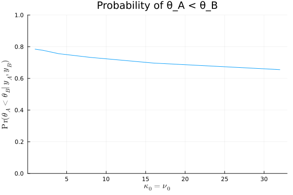

Exercise 5.2 Solution Example - Hoff, A First Course in Bayesian Statistical Methods
標準ベイズ統計学 演習問題 5.2 解答例
Table of Contents
answer
μ₀ = 75
σ₀² = 100
# %%
n_A = 16
n_B = 16
ȳ_A = 75.2
ȳ_B = 77.5
s_A = 7.3
s_B = 8.1
calc_μn = (n, ȳ, μ₀, κ₀) -> (κ₀ * μ₀ + n * ȳ) / (κ₀ + n)
calc_σ²n = (n, ȳ, s², σ₀², κ₀, ν₀) -> (ν₀ * σ₀² + (n-1) * s² + (κ₀ * n * (ȳ - μ₀)^2) / (κ₀ + n)) / (ν₀ + n)
function calc_posterior_param(n, ȳ, s², μ₀, σ₀², κ₀, ν₀)
κn = κ₀ + n
νn = ν₀ + n
μn = (κ₀ * μ₀ + n * ȳ) / κn
σ²n = (ν₀ * σ₀² + (n-1) * s² + (κ₀ * n * (ȳ - μ₀)^2)/ κn ) / νn
return κn, νn, μn, σ²n
end
function calc_mc(n, ȳ, s², μ₀, σ₀², κ₀, ν₀, n_mc)
κn, νn, μn, σ²n = calc_posterior_param(n, ȳ, s², μ₀, σ₀², κ₀, ν₀)
dist_inverse_σ² = Gamma(νn/2, 2/(νn * σ²n))
σ²_mc = rand(dist_inverse_σ², n_mc) .^ -1
calc_θ_mc = σ² -> rand(Normal(μn, sqrt(σ²/κn)))
θ_mc = calc_θ_mc.(σ²_mc)
return θ_mc, sqrt.(σ²_mc)
end
m = 10000
prob_A_lt_B = []
for k in [2^i for i in 0:5]
κ₀, ν₀ = k, k
θ_mc_A, σ_mc_A = calc_mc(n_A, ȳ_A, s_A^2, μ₀, σ₀², κ₀, ν₀, m)
θ_mc_B, σ_mc_B = calc_mc(n_B, ȳ_B, s_B^2, μ₀, σ₀², κ₀, ν₀, m)
prob = mean(θ_mc_A .< θ_mc_B)
push!(prob_A_lt_B, prob)
end

prior のパラメータ \(\kappa_0, \nu_0\) を大きくとるほど、 事後分布に対するデータの影響が相対的に小さくなり、 \(\theta_A < \theta_B\)の事後確率は減少していることがわかるが、同時に \(\kappa_0, \nu_0\)の値を上の範囲でいくら変えても、 \(\theta_A < \theta_B\)の確率は 70%程度であることがいえる。